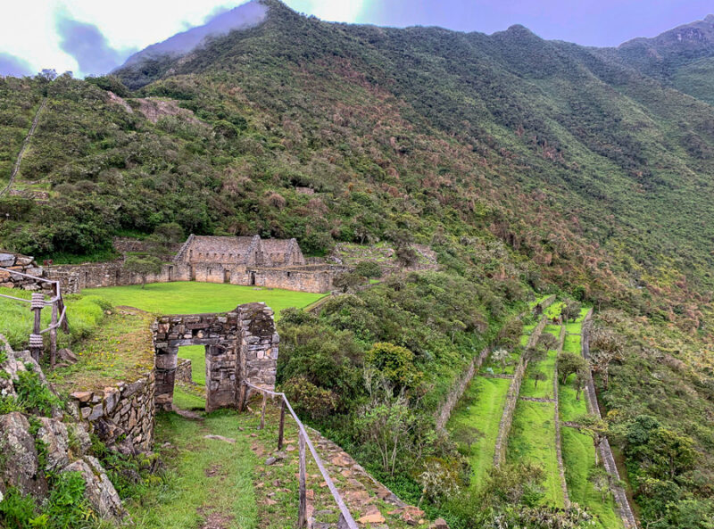
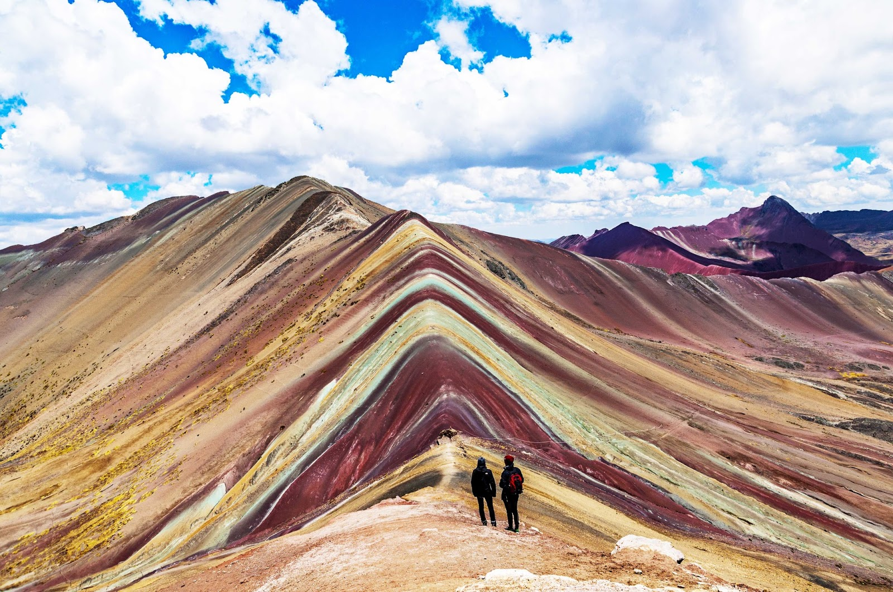
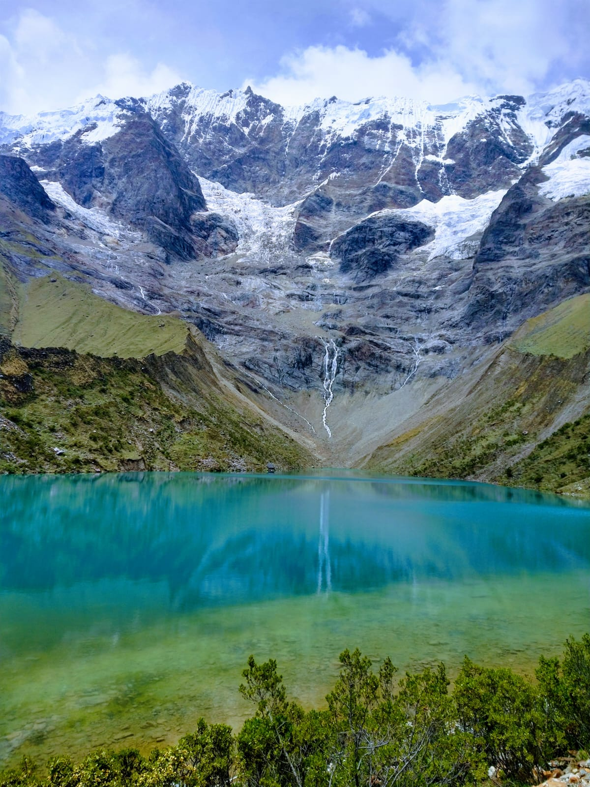

Expedición
Perú

Choquequirao

Ausangate Trek

Expedición



El trekking al Ausangate es una de las travesías de montaña más impactantes de Perú y una experiencia única para quienes buscan recorrer paisajes remotos de la cordillera andina. Alrededor del imponente Nevado Ausangate (6372 msnm), montaña sagrada de gran importancia para las culturas andinas, el recorrido atraviesa lagunas turquesas, pasos de altura, glaciares y pequeñas comunidades que aún conservan tradiciones ancestrales.
Durante la expedición se recorren extensos valles de altura rodeados por enormes montañas nevadas, con la posibilidad de disfrutar de aguas termales naturales y de conocer de cerca la vida de los pobladores andinos. Una travesía intensa y auténtica, ideal para amantes del trekking y la alta montaña que buscan vivir la inmensidad de los Andes peruanos en estado puro.
Abril a Octubre.
Una travesía hacia la ciudad oculta en la montaña. Todo incluido, lejos de las grandes multitudes, rumbo a uno de los últimos refugios preamericanos. Atravesando las profundidades del cañón del Apurímac para llegar a Choquequirao, recorreremos antiguos senderos incas entre quebradas, bosque montano y pobladores andinos.
Seis jornadas de inmersión en los caminos del Tawantinsuyu: ascensos demandantes, campamentos bajo las estrellas en contacto con las comunidades y el encuentro con una de las aldeas de altura más enigmáticas de la sociedad Andina ancestral. Propuesta única opcional: 2 días y medio en la ciudadela.
Abril a Octubre.
El camino de la ¨Montaña Salvaje¨ a Machupicchu combina aventura, naturaleza y cultura en un recorrido que atraviesa paisajes imponentes y ecosistemas cambiantes. Pasaremos por la mágica Laguna Humantay, bajo la mirada del majestuoso nevado Salkantay, para luego descender desde las altas montañas hacia el bosque nuboso y los límites de la selva peruana. Cada jornada revela escenarios únicos: glaciares, valles profundos, ríos cristalinos y senderos ancestrales rodeados de una naturaleza inmensa.
Al final de cada día, podrás descansar en alojamientos confortables y disfrutar de una excelente gastronomía andina en medio de las montañas. Acompañado por guías profesionales, disfrutaremos de la energía de esta ruta legendaria que culmina en una de las maravillas del mundo.
Abril a Octubre.